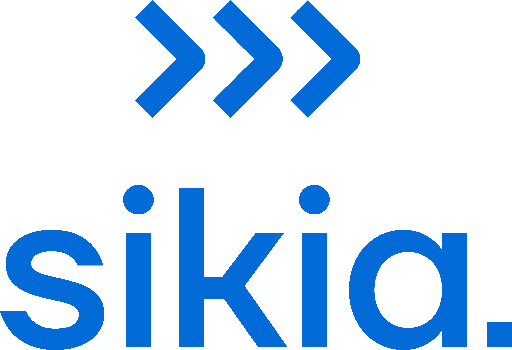
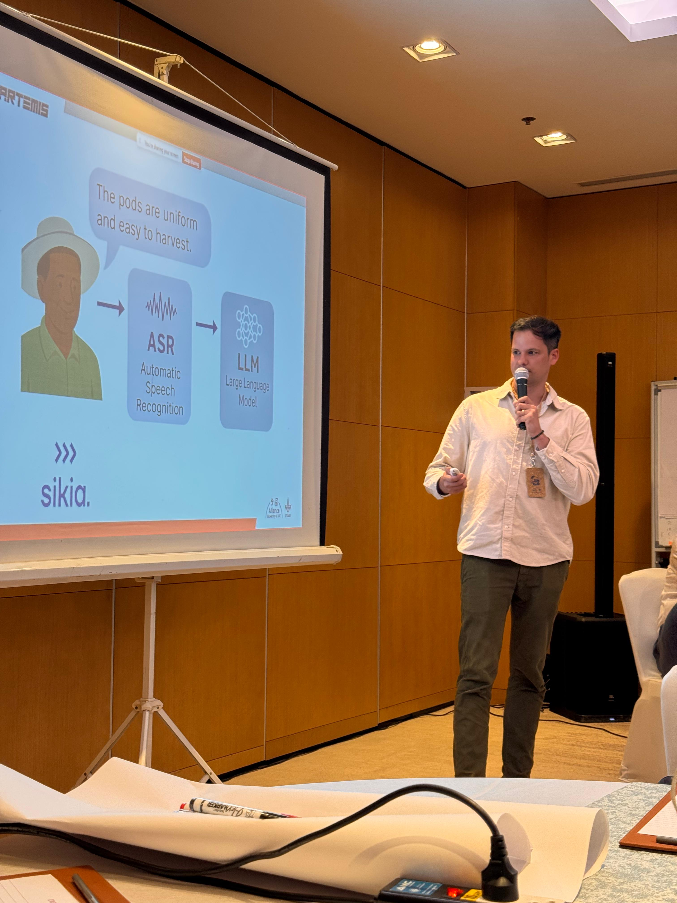

Capturing farmer voice, images, and rankings at scale to improve real-world crop evaluation.
Context
Sikia was developed within the Alliance of Bioversity International and CIAT to modernize participatory on-farm trials by integrating AI into the widely used TRICOT methodology and ClimMob platform.

Problem
Crop breeding programs still lack scalable ways to capture rich farmer feedback and real-world performance data. In practice, much of the farmer perspective is either lost or reduced to simple rankings, while more nuanced insights -- such as observations shared through voice or images -- remain largely inaccessible at scale.
Existing tools, primarily form-based systems, have improved data collection but remain fragmented and are not designed to leverage recent advances in artificial intelligence. At the same time, donors and stakeholders are increasingly questioning whether current platforms can keep pace with a rapidly evolving technological landscape. As a result, breeding programs face critical data gaps when evaluating crop varieties under real on-farm conditions.
Solution
Sikia is an offline-first mobile and web platform designed to modernize participatory crop research. It integrates structured ranking data from the TRICOT methodology with voice-based farmer feedback and image capture, combining speech-to-text and computer vision capabilities into a single workflow.
By bringing these modalities together, Sikia transforms multimodal field data into structured, analyzable insights. The platform enables breeding teams to capture richer, more contextual information from farmers while maintaining the scalability and standardization required for large-scale trials.
My Role
As Project Lead, I defined the product vision, strategy, and roadmap under tight donor-driven timelines. I built and led a focused engineering team covering mobile and backend development, and coordinated closely with research teams, AI initiatives such as NDIZI, and legacy systems like ClimMob.
A key part of my role was translating complex, research-driven workflows into a scalable digital product architecture, while aligning diverse stakeholders around a shared direction. I also led the planning and execution of the MVP delivery through rapid prototyping phases.
Approach
The MVP, targeted for April 2026, delivers a full end-to-end workflow for multimodal data collection and analysis. The platform supports offline-first mobile data collection in low-connectivity environments, combined with multilingual voice capture in English and Swahili, and image-based trait data collection integrated with AI pipelines.
A middleware layer connects existing systems such as ClimMob with new AI capabilities, enabling seamless data exchange and processing. This is supported by a unified backend for data ingestion, validation, and analytics, ensuring that data collected in the field can be reliably transformed into usable insights.

Impact
Sikia enables farmer voice to be captured at scale, moving beyond simple ranking data toward richer, more contextual insights. It bridges the gap between participatory research approaches and AI-driven analysis, creating a more complete evidence base for crop evaluation.
The platform also positions itself as a next-generation evolution of existing systems such as ClimMob, directly responding to donor expectations for modernization. More broadly, it establishes a foundation for scaling across CGIAR programs and national agricultural research systems.
Why It Matters
Sikia contributes to more inclusive and data-driven agricultural innovation by making farmer knowledge measurable and actionable. It enables breeding programs to generate evidence under real-world conditions, supporting the development of climate-resilient crop varieties.
By combining offline-first design with advanced AI capabilities, the platform also helps bridge digital divides, ensuring that innovation remains accessible in low-resource environments.
Key Challenges
The development of Sikia required navigating low-resource environments where connectivity, devices, and logistics are constant constraints. At the same time, the limited availability of high-quality AI models for African languages introduced additional complexity.
Another challenge was integrating new capabilities with legacy systems such as ClimMob without disrupting existing workflows, while aligning multiple stakeholders -- including researchers, donors, and engineers -- under significant time pressure.
Key Insight
Farmer-generated voice and image data can significantly enhance how crop performance is evaluated when combined with structured ranking approaches. However, this is only effective if the data can be captured through workflows that are simple, scalable, and designed from the ground up to integrate AI capabilities.